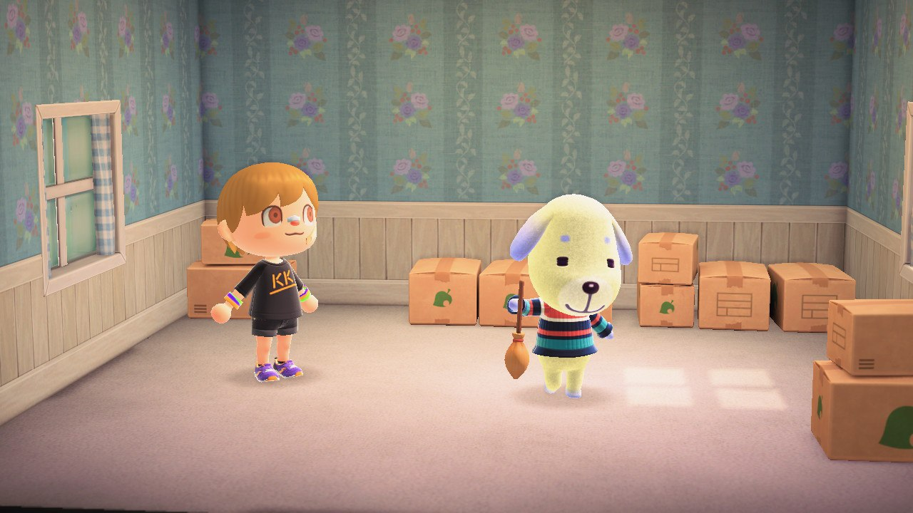

«На коробках»
В игре житель может принять решение о переезде на другой остров. И если вы согласились, то на следующий день после его решения и вашего согласия, он будет сидеть у себя дома, и собирать вещи в коробки. В этот день, когда житель «на коробках», гость острова, у которого на этот момент есть пустой участок, сможет забрать жителя к себе, придя к нему домой - поговорить. Подробнее о выселении рассказывали в гайде по выселению и ТТВ чате мы сокращаем это описание до «на коробках», показывая что именно сегодня любой, у кого есть свободное место, может приехать и забрать жителя.